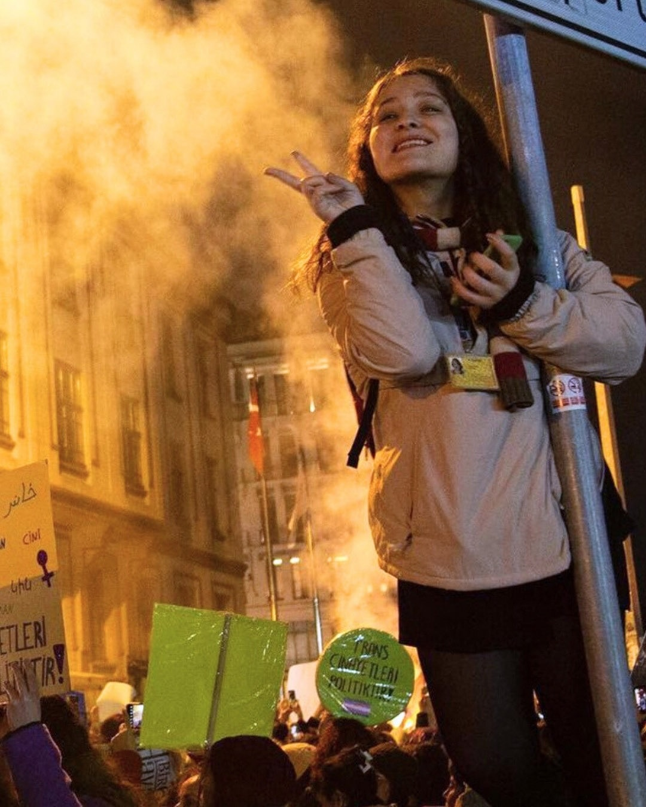
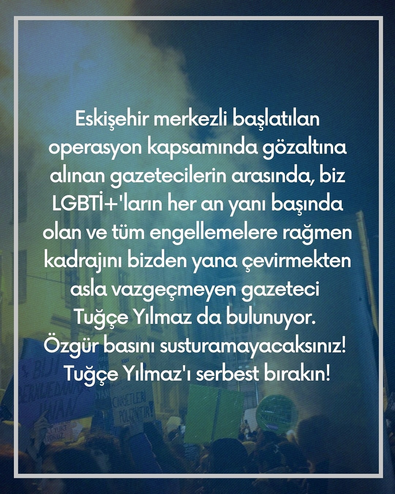

2024-11-27 08:27:00
Eskişehir merkezli başlatılan operasyon kapsamında gözaltına alınan gazetecilerin arasında, biz LGBTİ+’ların her an yanı başında olan ve tüm engellemelere rağmen kadrajını bizden yana çevirmekten asla vazgeçmeyen gazeteci Tuğçe Yılmaz da bulunuyor.
Özgür basını susturamayacaksınız!
Tuğçe Yılmaz’ı serbest bırakın!


